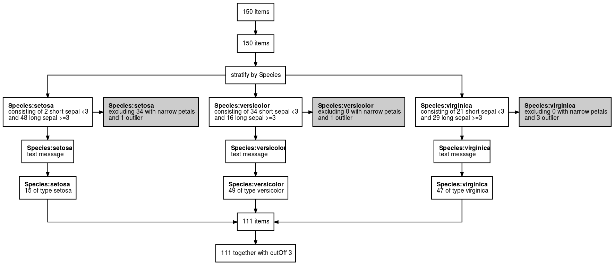

I have been known to execute parts of my data pipeline more than once. Sometimes part of my pipeline is designed to change depending on a specific parameter, for example an age cutoff, which I tweak and re-run. With interactive data analysis, and particularly using RMarkdown, this sometimes happens in a non-linear fashion, leading to, at best, confusion and at worst erroneous analysis.
Accurate documentation of a data pipeline is a first step to reproducibility, but in parameterised analysis that relies on data that is frequently updated, copying and pasting row counts into flowcharts in PowerPoint becomes quickly tedious. In the past I’ve based such flow charts on what I think my code is doing rather than actually what it did, which can lead to potential embarrassment.
The goal of dtrackr is to take away this pain by instrumenting and monitoring a dataframe through a dplyr pipeline, creating a step-by-step summary of the important parts of the wrangling that actually happened to the dataframe, right into dataframe metadata itself.
This way the pipeline documents itself, errors are easier to spot, there is less risk of error, and we have more time to spend with our kids/dog/playstation. What’s not to like?
Installation
dtrackr is in early development. It is not yet available on CRAN.
The development version is available from GitHub with:
# install.packages("devtools") devtools::install_github("terminological/dtrackr")
Example
Suppose we are constructing a data set with out initial input being the iris data. Our analysis depends on some cutOff parameter and we want to prepare a stratified data set that excludes flowers with narrow petals, and those with the biggest petals of each Species. With dtrackr we can mix regular dplyr commands with additional dtrackr commands such as comment and status, and an enhanced implementation of dplyr::filter, called exclude_all, and include_any.
# a pipeline parameter cutOff = 3 # the pipeline dataset = iris %>% track() %>% status() %>% group_by(Species) %>% status( short = p_count_if(Sepal.Width<cutOff), long= p_count_if(Sepal.Width>=cutOff), .messages=c("consisting of {short} short sepal <{cutOff}","and {long} long sepal >={cutOff}") ) %>% exclude_all( Petal.Width<0.3 ~ "excluding {.excluded} with narrow petals", Petal.Width == max(Petal.Width) ~ "and {.excluded} outlier" ) %>% comment("test message") %>% status(.messages = "{.count} of type {Species}") %>% ungroup() %>% status(.messages = "{.count} together with cutOff {cutOff}")
Having prepared our dataset we conduct our analysis, fit our models, massage our statistics, and disprove our hypothesis, write it up and prepare it for submission.
It is usually at this point someone says, “Did you exclude XYZ?” or “How many of WXY did you find in each group?” or something similar. Before dtrackr you would have muttered something about having to look at the code to see what you did (and hope it does the same thing next time), but now all you do is this:
# man/figures path needed here to ensure this works for pkgdown and for github dataset %>% flowchart("man/figures/demo")

And your publication ready data pipeline, with any assumptions you care to document, is creates in a format of your choice (as long as that choice is one of pdf, png, svg or ps), ready for submission to Nature.
This is a trivial example, but the more complex the pipeline, the bigger benefit you will get.